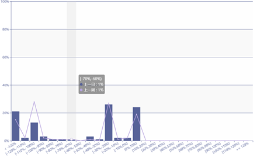
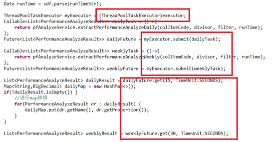

一次性能事故的处理和总结
前情
前几天做了一个工况统计的功能，查询最近7天的数据然后分析数据的分布。
从一开始接到这个需求就感觉哪里有点不对劲，上线一周后终于迎来了一次爆发：页面响应慢，多次查询后服务不可用。
分析
从线上环境拉取日志后发现两个异常表现，
- 在进行查询分析的时候，后台会出现超时异常
- 经历了两到三次的超时异常后，出现了OOM导致系统服务不可用
从日志的表现我们可以大致还原一下事故现场。
1 | >> 用户点击查询分析功能，服务器开始吭哧吭哧的查询，由于数据量多导致查询的响应速度成为瓶颈 |
验证
我们从以下两方面进行验证，首先是通过问题重现验证我们关于事故现场的假设，其次通过分析代码来找出支持这种假设的依据。
问题重现
问题重现很容易，我们从客户现场拿回了全量的数据文件在本地就可以克隆一个现场环境。
然后按照我们设想的步骤进行操作，在第2步的时候等了将近1分钟，页面返回了一个空结果集，然后我们再点击一次查询，没过多久页面出现500错误服务已经不可用。
查看后台日志的表现和线上环境的表现一致，所以我们可以认为我们基本还原了现场。
唯一的不同是我们这边等了近1分钟后页面是有返回一个空的结果集，并不是设想中的一直等待。
代码验证
查看了该功能的相关代码后，我们定位出几个可能导致问题的代码片段。
- 使用了线程池充分利用多线程的优势加快响应速度，这个没问题，但是当线程池被不恰当使用的时候很有可能造成系统资源得不到合理分配，最终导致OOM
- 在这里通过两个线程分别查询前一天的数据和前七天的数据，事实上这两部分数据是有重复的，多余的查询动作造成了资源的浪费
- 在线程阻塞的时候设置了15秒和30秒的查询超时时间，这里应该是造成日志中超时异常的根源
交叉验证
结合问题重现和代码验证的结果，我们通过交叉验证进一步的确认症结所在。
超时问题
在代码验证的过程中我们定位了两个代码片段，接下来我们就修改这两个片段，去掉超时时间的指定，一直等待到执行完成。
原代码：
dailyFuture.get(15, TimeUnit.SECONDS);修改后：
dailyFuture.get();通过这一步的验证，我们发现整个操作是可以返回结果的，只不过需要等将近2分钟，那么超时问题就转移为慢查询问题了。
接下来我们比较测试数据和线上数据后发现，线上数据比测试数据翻了一倍，原因是现场加大了采集频率，这样导致了我们预先实验出来的超时时间设定不符合数据要求。
由于数据量是我们不可控的，最终针对这个问题我们的解决思路是优化查询，减少查询所需要的时间。优化基线是数据量每天172w点,查询时间30秒，对象转换时间5-10秒。
OOM问题
针对OOM问题我们定位的原因是多线程，于是我们将整个查询过程查询7天的数据都串行化后，发现一次查询的内存占用都在1G以下，由于串行后资源得到及时释放，多次查询也不会造成OOM问题。
对比我们目前的设置，线程池设置的最大大小是30，每天的查询作为一个任务提交，理论上最多会在内存中保留30天的数据，OOM简直是一定的了。这样分析下来我们OOM的问题转移为线程池大小的合理设置问题，当然慢查询问题也是导致OOM问题的一个因素，因为查询一直没有返回导致资源无法被垃圾回收。
总结下来，解决目前问题（超时和服务不可用）的突破口是:
- 优化慢查询
- 合理设置线程池
解决
通过上面的分析和验证过程我们已经找到了问题的两个突破口，其中设置线程池主要通过不断的优化调整完成，所以解决问题的重点我们放在了优化慢查询上。
我们将整个分布分析过程分解如下：

其中Influx查询和客户端对象转换属于我们慢查询的优化范畴，开始优化之前我们明确一下我们优化的基线，
| 数据量 | Influx查询用时 | 对象转换用时 |
|---|---|---|
| 1728000（20Hz） | 30s | 5~10s |
Influx查询
对于Influx查询，我们首先分析执行过程：客户端通过Okhttp发送请求到Influx服务端，服务端执行查询语句，返回结果到客户端。
分析下来影响查询响应时间的因素主要有，
- 传输因素，数据量对于网络传输的时间消耗
- 服务器因素，服务器负载性能对于influx的查询时间影响
- 查询语句，查询语句的不合理书写影响了influx的查询性能，如未使用时间和标签等索引
首先我们看看我们的查询语句：
1 | SELECT * FROM history WHERE item_code='%s' and time>=%s and time<%s |
这个语句使用了time进行筛选，使用了item_code这个标签进行索引查询，但是在返回的结果集中使用了*返回了所有的字段。实际上我们这个需求只需要用到value字段，根据influx的查询接口我们针对每条记录只需要返回长度为2的数组，一个记录时间一个记录value。现在使用了*返回了很多无用的tag字段，结果集相当于翻倍了，改进后的查询语句：
1 | SELECT value FROM history WHERE item_code='%s' and time>=%s and time<%s |
仅仅通过这个小小的改动，每次查询的平均时间减少到20s。
顺着这个思路我们进一步缩减结果集，将原来写在代码中的一个过滤条件加入查询语句，最终的查询语句如下：
1 | SELECT value FROM history WHERE ABS(value)> %s and item_code='%s' and time>=%s and time<%s |
优化后的查询时间稳定在15s左右。
对象转换
对象转换阶段主要发生在influx客户端，通过InfluxDBResultMapper将服务端的Response转换成Pojo对象。
在这一步中我们定位了几个可能的优化点，
将Response转换成Pojo相比于直接操作Response，多了一倍的内存占用
InfluxDB这样做可以确保通用性，而对于我们来说没有必要。
转换过程基于反射
为了找到Pojo和字段的对应关系，需要通过反射来保证通用性，我们在已经知道顺序的情况下直接赋值即可。
在遍历结果集的使用的stream而没有使用parallelstream
InfluxDB为了保证结果集解析的顺序性，而在我们的需求中对于顺序没有要求，所以可以利用并行流来提高处理效率。
最终我们的方案是直接解析Response进行分析计算，代码如下：
1 | public static List<DataItem> queryToDataItem(String ql, String dbName, String tableName, InfluxDB influxDB) { |
通过这一步优化，我们每一次查询后的转换可以控制在2s之内，而且大大降低了内存使用。反观InfluxDB客户端的实现，这也体现了代码中通用性和运行效率的博弈，我们可以合理利用tradeoff来实现我们的目的。
总结
我们通过一起线上的事故作为切入点，首先通过经验进行合理的假设分析，得到一个可以模拟的事故现场。然后通过问题重现、代码定位和交叉验证的方式定位到最终需要解决的问题。在解决问题阶段我们根据我们在解决一般性能问题的经验，迁移到时序数据库性能问题的解决上，而最终的解决方案也证实了性能问题都是相通的。
通过以下表格可以看出我们优化的成效：
| 数据量 | Influx查询用时 | 对象转换用时 | |
|---|---|---|---|
| 优化前 | 1728000 | 30s | 5~10s |
| 优化后 | 1728000 | 15s | 2s |
也许有人会觉得查询花费将近20s还是有点慢，下面就分享一个这个过程中的趣事。
针对这个问题，我和另一个同事分别进行优化。在优化到7次查询用时80s左右的时候，我感觉已经没有多大的余地了，结果他给出了他的优化结果是60s，出于好奇心我又花了一天时间在考虑资源利用最大化的情况下也还是在80左右徘徊。
最后我只能拿着他的方案过来研究一下，结果发现一跑要100多，于是检查一下机器配置后发现他的测试机是DDR4，而我的是DDR3。同样把我的优化方案放到他的机器上跑了一下，7天的查询时间为40s，相当于内存效率差了一倍。
花絮
此外分享在InfluxDB调优中的两个花絮，
使用chunk的方式并不能提升查询效率
chunk的方式其实是一种数据分页查询，通过串行的方式查询一个个子结果集。优点是可以快速返回并处理，减少资源锁时间。但是在百万级数据上的切分并没有到达查询引擎的临界点，相反增加了建立连接的次数和结果集处理的复杂度。
不使用绑定变量的方式查询速度更快
使用关系型数据库如MySql的经验告诉我们，在查询的时候使用绑定变量可以更加安全并且可以获得较好的查询性能。安全是毋庸置疑的，但是Influx对于更快的查询性能方面似乎没有实现，经过实测使用绑定变量的查询反而会慢一点。